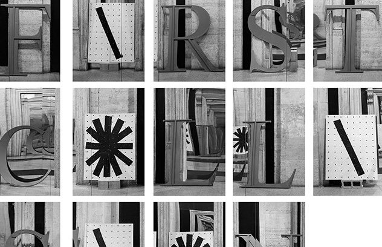
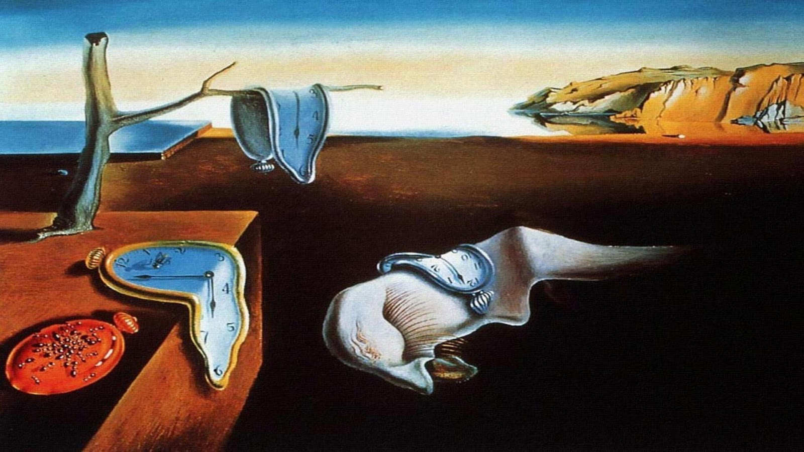
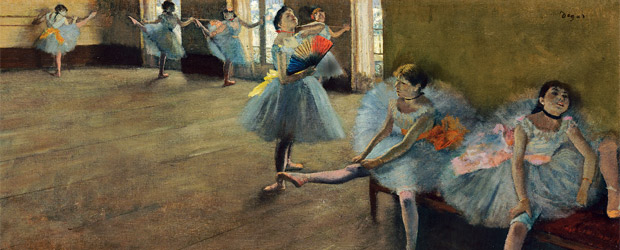

Ebner toma la forma de fotografías y poemas que cuestionan los límites y la ambigüedad del lenguaje.
Shannon Ebnerr
2017


La persistencia de la memoria es un cuadro del pintor surrealista Salvador Dalí, que fue ejecutado en el año 1931 en menos de cinco horas.
Salvador Dalí
1931
Considerado uno de los fundadores del Impresionismo,Degas capta las sensaciones de vida y movimiento, sus retratos muy apreciados por la complejidad psicológica y sensación de verdad que transmiten.
Edgar Degas
1883
